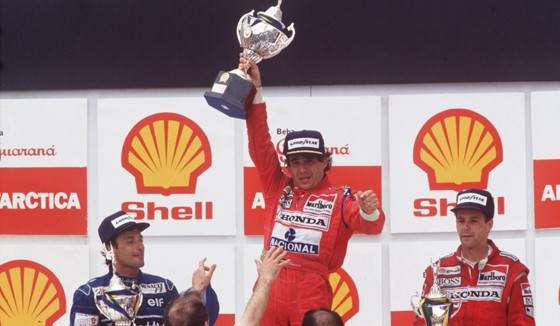
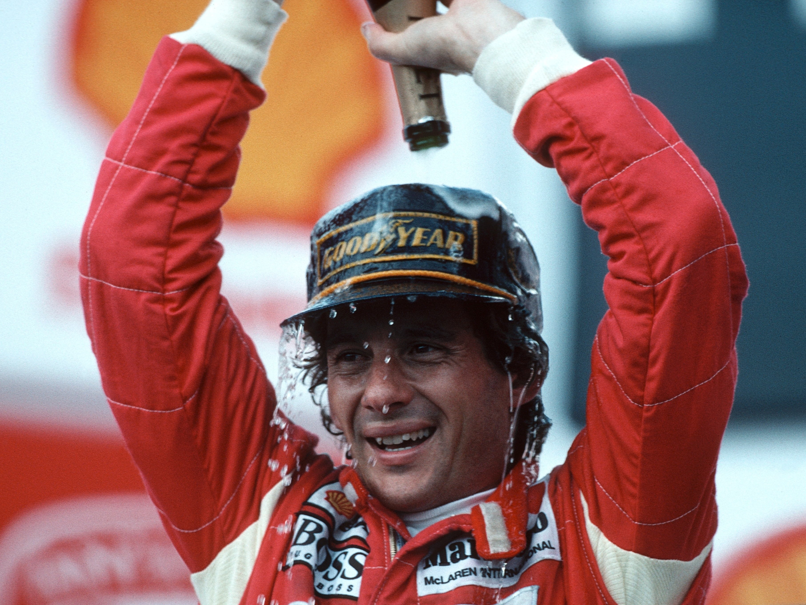

Os 3 títulos de Senna na F1
1988: o primeiro título
Em 88, em sua primeira temporada na equipe, Ayrton subiu ao pódio em 11 oportunidades, conquistando 8 vitórias nas 16 provas do ano.
Na mais marcante delas, no Japão, Senna largaria na pole, mas teve problemas na largada e caiu para a décima sétima posição. Ele fez uma corrida incrível de recuperação e, na volta 28, ultrapassou Alain Prost para reassumir a ponta. Aquela vitória lhe garantiu o título.

1990: o ano do troco em Alain Prost
Depois do primeiro título, Senna amargou um vice-campeonato em 89, em um ano repleto de polêmicas em que travou fortes batalhas com a FIA e chegou a ter a licença de piloto suspensa. Em 1990, no entanto, voltou ao topo. Aquela temporada teve dois momentos marcantes. No GP do Japão, novamente, Senna e Prost se tocaram e acabaram deixando a prova, num resultado que deu o título ao brasileiro. No ano anterior, no mesmo circuito, os dois também haviam se chocado, mas o resultado dera o título para Prost.
Já no GP de Monza, casa da Ferrari (equipe de Prost), Senna fez uma aposta com Ron Dennis, chefe da McLaren: se vencesse a prova, queria o carro de presente. O chefe aceitou e Senna fez a pole, a melhor volta e liderou de ponta a ponta, ficando com a vitória e a McLaren.

1991: tri com direito a vitória em casa
A temporada de 1991 foi ainda mais especial. Senna venceu as quatro primeiras provas do ano. A segunda delas, inclusive, no Brasil, quebrando um tabu. Até então, ele ainda não tinha vencido diante de sua torcida.
Com 12 pódios e 7 vitórias nas 16 provas, Ayrton liderou o campeonato de ponta a ponta para conquistar seu terceiro e último título mundial. Ele ainda conquistaria o quarto lugar em 92 e o vice-campeonato em 93, antes da tragédia em 94.